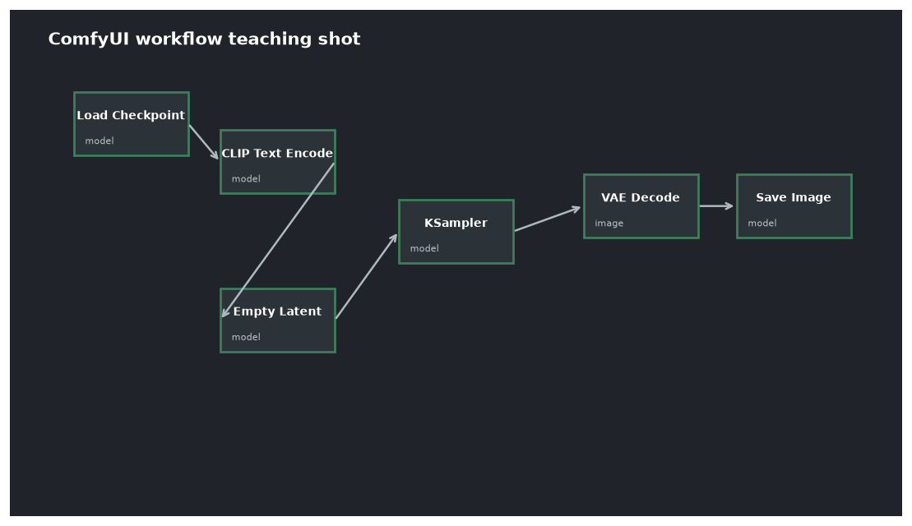

本讲目录
第 07 讲 · 节点 = 原理的落地：逐节点拆解第一个工作流
本课程的点睛之讲。ComfyUI 与其他生图界面的根本区别：它把第 04 讲那张流水线图原封不动画在屏幕上让你摆弄——别的工具把管线藏进"生成"按钮，ComfyUI 把管线本身交给你。所以学 ComfyUI 的正确姿势不是背操作，而是把每个节点映射回它的数学身份。本讲用默认文生图工作流完成这个映射，从此你看任何复杂工作流都是"找骨架 + 认外挂"。

1. 先读懂"线"：类型即颜色
节点间的连线是有类型的（颜色区分），类型不匹配就接不上——这是 ComfyUI 帮你守住的第一道正确性防线。六种主力线型先认脸：
| 颜色 | 类型 | 是什么（原理身份） |
|---|---|---|
| 紫 | MODEL | 去噪网络 \(\epsilon_\theta\)（第 04 讲的 U-Net/DiT） |
| 黄 | CLIP | 文本编码器（还没吃提示词的"编码机器"本身） |
| 橙 | CONDITIONING | 编码后的条件向量组 \(c\)（提示词已变成向量） |
| 红 | VAE | VAE 编解码器本体 |
| 粉 | LATENT | 潜空间张量 \(z\)（第 04 讲的 64×64×4 战场） |
| 蓝 | IMAGE | 像素图像（人眼能看的最终形态） |
读工作流的诀窍由此而来：顺着粉线走。LATENT 从哪出生（Empty Latent / VAE Encode）、被谁加工（KSampler）、在哪显影（VAE Decode）——这条主动脉就是骨架，其余全是给它供料的支线。
2. 默认文生图工作流：七个节点逐个对号
在 ComfyUI 里点 菜单 → Workflow → Browse Templates → Text to Image（或加载课程工作流包的 wf02_sdxl_txt2img.json），画布上是这七个节点：
1. Load Checkpoint —— 拆包三大件
选 sd_xl_base_1.0.safetensors。它吐出三条线：MODEL（紫）+ CLIP（黄）+ VAE（红）——正是第 04 讲"checkpoint = 三大件打包"的画布证明。一个节点，整机零件全取出。
2.3. CLIP Text Encode ×2 —— 把文字变向量
两个一模一样的节点，黄线进橙线出：\(\text{提示词} \xrightarrow{\text{CLIP}} c\)。上面那个接 KSampler 的 positive 口，下面接 negative 口——回忆第 03 讲 CFG 的公式：这两条橙线就是 \(\epsilon_\theta(c_+)\) 与 \(\epsilon_\theta(c_-)\) 的两个条件，负面提示是"被推离的参照物"，不是过滤器。
先写个经典组合试跑：
正面: a cat astronaut floating inside a space station,
detailed illustration, soft lighting, high quality
负面: low quality, blurry, watermark, text, extra limbs
4. Empty Latent Image —— 采样起点 \(z_T\)
生成一张指定尺寸的潜空间噪声（粉线出）。填 1024×1024（SDXL 的原生分辨率，第 04 讲）；batch_size=1。第 01 讲的 \(z \sim \mathcal{N}(0, I)\) 就是它——严格说它产出全零张量、噪声由 KSampler 按种子注入，但数学身份不变：一切从高斯开始。
5. KSampler —— 整个上篇的数学浓缩在这一个节点
四条输入线全部各就各位：MODEL（\(\epsilon_\theta\)）、positive/negative（CFG 的两个条件）、latent_image（起点 \(z_T\)）。它执行的就是第 02–03 讲的循环：按 scheduler 排好噪声刻度 → 每步双跑模型做 CFG → 用 sampler 的积分格式走一步 → 循环 steps 次。参数用第 03 讲的甜区：
steps=25, cfg=6.0, sampler=dpmpp_2m, scheduler=karras,
seed=任意, denoise=1.0 (文生图=全程去噪, 第02讲)
6. VAE Decode —— 显影
粉线（去噪完成的 \(z_0\)）+ 红线（VAE）→ 蓝线（像素图）。潜空间到人眼世界的最后一跳（第 04 讲）。
7. Save Image —— 落盘
写入 E:\AI\Outputs（第 06 讲的启动参数指定的）。顺带把整个工作流 JSON 嵌进 PNG 元数据——所以任何 ComfyUI 生成的 PNG 拖回画布都能还原完整工作流（复现自己旧图、学别人图的头号途径；也提醒你：发图给别人 = 连提示词带参数一起发了，介意就先洗掉元数据）。
对照表收束（贴在心里）：
| 节点 | 数学身份 | 出处 |
|---|---|---|
| Load Checkpoint | 拆包 \(\epsilon_\theta\) + CLIP + VAE | 第 04 讲 |
| CLIP Text Encode | \(c = \text{CLIP}(\text{prompt})\) | 第 04 讲 |
| Empty Latent | \(z_T \sim \mathcal{N}(0,I)\) | 第 01/02 讲 |
| KSampler | 迭代去噪 + CFG + 数值积分 | 第 02/03 讲 |
| VAE Decode | \(z_0 \to x\) 显影 | 第 04 讲 |
| Save Image | 落盘 + 工作流入 PNG | — |
3. 画布操作最小集
学操作只需要这一小撮（其余用到再查）：
- 加节点：画布空白处双击搜索名字；或从某个输出口拖线到空白处松手——会弹出"能接这条线的节点"列表（比双击搜索好用得多，推荐养成）；
- 连线：输出圆点拖到输入圆点；同类型才能接；
- 改参数：点住数字左右拖 = 粗调，双击 = 键盘输入；
- 跑：底部 Queue（或 Ctrl+Enter）；节点边框会依次高亮显示执行进度——顺序就是数据流顺序，看几次你对管线的理解就长在直觉里了；
- 画布：滚轮缩放、空格/中键拖动、框选多节点一起挪；
- 禁用某节点：选中按 Ctrl+M（mute）——调试工作流的常用开关；
- 保存：菜单 → Workflow → Save As，存到
E:\AI\Workflows（第 06 讲的约定）。
4. 两个立刻能做的实验（比读十遍都有用）
实验 A · 种子的意义：跑一张图后，把 KSampler 的 control_after_generate 设为 fixed，连跑三次——三张完全相同（确定性采样器 + 固定种子 = 完全可复现，第 03 讲）。再改成 randomize 跑三次，构图各不相同。从此记住：分享参数不带种子 = 没分享；调参不固定种子 = 无效对比。
实验 B · CFG 的体感：固定种子，cfg 分别取 1 / 6 / 15 跑三张。cfg=1 散漫跑题（引导没开），6 正常，15 过饱和颜色发焦（score 外推过头）——第 03 讲 5.2 节的三段论亲眼看一遍。
5. 看懂复杂工作流的通用算法
以后在网上看到几十个节点的大工作流（比如你朋友那张），按这个算法拆，没有例外：
- 找粉线主动脉：LATENT 从哪出生、经过几个 KSampler、在哪显影——骨架即得；
- 认外挂：LoRA Loader 串在紫线上（改 \(\epsilon_\theta\) 权重，第 05 讲）、ControlNet 串在橙线上（往条件里塞结构，第 05 讲）、IPAdapter 挂在紫线上（并联图像注意力）——每个外挂都在第 05 讲的总表里；
- 其余是便利设施：预览、对比、文件名管理、批量开关——不影响数学，最后再看。
第 09/11/12/13 讲会逐类展开"外挂"，到时回头看复杂工作流就是透明的。
上机任务
- 加载
wf02_sdxl_txt2img.json（或从模板搭），跑出你的第一张 1024 SDXL 图； - 完成实验 A 和 B，把"固定种子单变量调参"变成肌肉记忆；
- 从
E:\AI\Outputs把成图拖回画布，确认工作流被还原； - 把提示词换成你真正想画的东西，跑 10 张，挑出最好的一张记下它的完整参数——你的第一份"配方"。
骨架通了。下一讲把 KSampler 剩余参数（steps/denoise/分辨率/batch）的全部细节钉死，并给出一套系统性的调参方法——从此告别"随便改改看运气"。